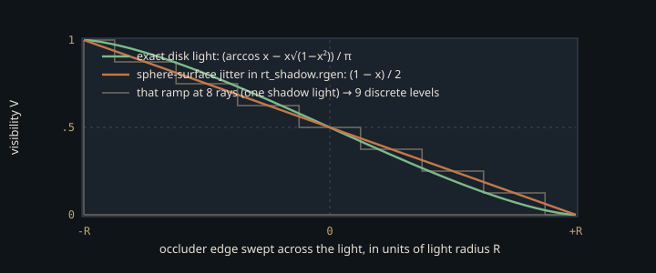

Monograph · Tree · ← Module hub · RT shadow technique
hybrid
RT shadow technique
init → SBT → render visibility from GBuffer.
The one term the GBuffer cannot hold
A deferred GBuffer stores everything the lighting equation needs at a point — position, normal, albedo, roughness, metallic — except the one quantity that is not a property of the point at all. Visibility depends on the whole scene along a ray. Cascade shadow maps answer it by re-rasterising depth from the light, at a pass per cascade and the cost of projective aliasing, cascade seams and a bias nobody gets right. `RTShadowTechnique` asks the TLAS instead: no light-space projection, no cascade split, no depth-map resolution to alias against. It has a bias of its own and it cannot see an alpha mask — both below.
The result is a screen-resolution `R8G8B8A8_UNORM` image with one channel per shadow light, 0 = shadowed, 1 = lit,
imageInfo.format = VK_FORMAT_R8G8B8A8_UNORM;ohao/render/rt/rt_shadow_technique.cpp:105which the deferred lighting fragment shader samples once, at binding 14, before its light loop:
vec4 rtShadow = rtShadows ? texture(rtShadowMask, inTexCoord) : vec4(1.0);shaders/core/deferred_lighting.frag:220Inside the loop each light picks its own channel by the slot stored in its `params.w`, and the BRDF result is multiplied by it.
if (slot < 4) shadow = rtShadow[slot];shaders/core/deferred_lighting.frag:251Binding the mask is also what switches the pipeline — though not at the line that looks like it does. `setRTShadowMask` raises flag bit 5 and clears the CSM bit, but neither write ever reaches the GPU: `execute` zeroes the whole flag word and rebuilds it from the bound views every frame, before pushing it.
m_params.flags = 0;ohao/render/deferred/deferred_lighting_pass.cpp:161In that rebuild the RT bit and the CSM bit are the two arms of a single if/else keyed on whether an RT shadow view is bound at all, so the two shadow systems are mutually exclusive by construction rather than by convention.
else if (m_shadowMapView != VK_NULL_HANDLE)ohao/render/deferred/deferred_lighting_pass.cpp:170The fragment shader repeats the structure, branching on bit 5 first and reaching CSM only through the `else`.
} else if ((pc.flags & 4u) != 0u && lightType == 0) {shaders/core/deferred_lighting.frag:252Which lights get a channel
The light table decides. Walking the raster lights in light order, it gives each light whose `castShadows` is set the next free channel until there are `kMaxShadowLights` of them, four, and records it in `params.w`:
shadowSlot = static_cast<float>(m_shadowLights.size());ohao/render/scene/light_table.cpp:149A light that casts shadows after the four channels are taken gets `kShadowNoSlot` (4); a light with `castShadows` off gets `kShadowNever` (-1), and so does every emissive proxy, which sits inside its own mesh.
inline constexpr float kShadowNoSlot = static_cast<float>(kMaxShadowLights);ohao/render/scene/render_scene_types.hpp:99light.params = glm::vec4(0.0f, 0.0f, -1.0f, kShadowNever); // inside its own mesh: never shadowedohao/render/scene/light_table.cpp:175The lighting shader reads the three cases directly. A negative slot is never occluded; a slot below four takes its channel when the RT bit is set; slot 4 is unshadowed under RT shadows and, without them, a directional light still gets CSM.
int slot = int(round(light.params.w));shaders/core/deferred_lighting.frag:248The lights with a channel, in channel order, are `RenderScene::shadowLights()`, which the dispatch hands to the deferred renderer each frame (or, for a scene with no lights at all, the fallback sun as channel 0). The renderer adds the pass only when that list is non-empty: a frame in which no light casts shadows traces nothing.
if (m_useRTShadows && m_rtShadow && sceneTlas != VK_NULL_HANDLE && m_gbufferPass && !m_shadowLights.empty()) {ohao/render/deferred/deferred_renderer.cpp:316What the estimator actually computes
Direct lighting from an area source is
where $\Omega_\ell$ is the solid angle the light subtends at the shading point $x$, $f_r$ is the BRDF, $L_i$ the incident radiance, $\mathbf{n}$ the shading normal, and $V \in \{0,1\}$ the binary visibility along $\omega$. One mask channel per light cannot represent that integral. What this pair of passes evaluates is the separable approximation
where $\bar\omega$ is the direction the lighting pass uses for the light. The raygen shader produces $\bar V$ by averaging $N$ traced samples into the light's channel:
mask[l] = visibility / float(rays);shaders/rt/rt_shadow.rgen:128and the lighting pass multiplies that single number by a BRDF evaluated only at $\bar\omega$. Factoring $V$ out is exact wherever it is constant across the light — everywhere but the penumbra; inside one, the error is the covariance between visibility and the cosine-weighted BRDF over the source, the term a path tracer keeps and this one discards.
A ray tracing pipeline whose hit shader never runs
Three shader groups are compiled: raygen, miss, and a triangle hit group whose only member is an any-hit shader — `closestHitShader` is `VK_SHADER_UNUSED_KHR` in all three, and max recursion depth is one, since a visibility ray spawns nothing.
pipelineInfo.maxPipelineRayRecursionDepth = 1; // shadow rays don't recurseohao/render/rt/rt_shadow_technique.cpp:301The interesting part is the flag combination the raygen traces with: terminate-on-first-hit, force-opaque, and skip-closest-hit together.
uint rayFlags = gl_RayFlagsTerminateOnFirstHitEXT | gl_RayFlagsOpaqueEXT | gl_RayFlagsSkipClosestHitShaderEXT;shaders/rt/rt_shadow.rgen:73`gl_RayFlagsOpaqueEXT` forces every intersection to be treated as opaque, and opaque intersections do not invoke any-hit shaders. The any-hit stage in group 2 therefore never executes — and does not need to. The payload is set to `0.0` immediately before `traceRayEXT`, the miss shader is the only stage that can raise it, and a hit leaves the pre-set value alone.
shadowPayload = 1.0; // no occlusion = fully litshaders/rt/rt_shadow.rmiss:9The occlusion answer is delivered by a shader that did not run. `terminateRayEXT` in the `.rahit` is unreachable under the current flags; it becomes live the moment someone drops `gl_RayFlagsOpaqueEXT` for alpha-cutout foliage, which is presumably why it is compiled in at all.
terminateRayEXT;shaders/rt/rt_shadow.rahit:11The rejected alternative is a closest-hit shader reporting hit distance — the channel an NRD-style denoiser wants for sizing its spatial filter. What gives it up is `gl_RayFlagsTerminateOnFirstHitEXT`: traversal may stop at the first intersection it finds rather than continue until the nearest one is proven. The empty `closestHitShader` slots in all three groups follow from that flag — they are its consequence, not the reason for it. The price: this mask carries no distance signal, so its softness must come entirely from ray count.
Three penumbra samplers
The push constants carry up to four lights, three `vec4`s each, followed by the dispatch size, the light count and the rays per light:
ShadowLight lights[4];shaders/rt/rt_shadow.rgen:21Softness comes from jittering the sample target, and the shader has a geometry per light type. A directional light (type 0) gets a tangent basis around the light direction and an offset inside a disk of the light's angular radius, with $\sqrt{r_1}$ making samples uniform in disk area — a small-angle construction, since the offset is the angle rather than its tangent:
float angle = light.edge1AndRadius.w * sqrt(r1);shaders/rt/rt_shadow.rgen:97A point or spot light (type 1) instead displaces the light *position* to a uniformly distributed point on a sphere of the light's radius:
float phi = acos(1.0 - 2.0 * r2);shaders/rt/rt_shadow.rgen:109A rectangle (type 2) is sampled uniformly over its area, from the corner its position names along its two edges — the convention the path tracer samples it by:
target = light.positionAndType.xyz + light.edge1AndRadius.xyz * r1 + light.edge2AndRange.xyz * r2;shaders/rt/rt_shadow.rgen:105Because $\cos\varphi = 1 - 2r_2$ is uniform on $[-1,1]$, the sphere branch is a correct uniform-area sampler of the sphere *surface* — with a consequence worth naming. By Archimedes' hat-box theorem a uniform distribution on a sphere projects to a uniform distribution on any single axis, so an occluder edge sweeping across the source yields a **linear** visibility ramp, not the circular-segment S-curve a genuinely disk-shaped source produces. The difference shows at the two ends of the penumbra, where the true profile approaches full light and full shadow tangentially and the linear one arrives with a crease.

Rays and seeds
The technique spends a fixed budget of eight rays a pixel and shares it among the frame's shadow lights, each getting at least one:
return lights == 0 ? 0u : std::max(1u, raysPerPixel / lights);ohao/render/rt/rt_shadow_technique.hpp:44So the pass costs about the same with one light as with four, and the quality does not: one light gets eight rays and nine distinct visibility levels, four lights get two rays each and three levels apiece. At these counts the quantisation matters more than the profile.
Every random number is an integer PCG hash of the render seed, the frame index since the last temporal reset, the pixel, the light, the sample and the dimension:
uint h = pcg(pc.seed.x ^ pcg(pc.seed.y ^ pcg(pixel.x ^ pcg(pixel.y ^ pcg((light << 24u) ^ (s << 4u) ^ dim)))));shaders/rt/rt_shadow.rgen:39The deferred renderer supplies both seeds, the one `setRenderSeed` stored and the counter `resetTemporalState` zeroes, so the noise decorrelates from frame to frame while two renders of the same world with the same seed trace the same rays. Nothing in the technique accumulates the mask across frames.
pc.seed = glm::uvec4(input.renderSeed, input.frameIndex, 0u, 0u);ohao/render/rt/rt_shadow_technique.cpp:538Sharp edges
The ray origin is pushed a flat 0.05 world units along the shading normal, with `tmin` = 0.001 behind that:
vec3 origin = worldPos + N * 0.05;shaders/rt/rt_shadow.rgen:69The offset is absolute, not scaled by depth or texel footprint: too large for centimetre-scale detail, where contact shadows detach into the ray-traced form of peter-panning, and too small for a kilometre-scale scene.
Sky pixels are detected by testing the GBuffer position for exact zero *and* zero alpha:
if (worldPos == vec3(0.0) && posSample.a == 0.0) {shaders/rt/rt_shadow.rgen:59The alpha being tested is not a coverage bit — GBuffer0 packs metallic there:
outGBuffer0 = vec4(fragWorldPos, metallic);shaders/core/gbuffer.frag:120The test works only because that attachment clears to (0,0,0,0); a non-metallic surface passing exactly through the world origin is classified as sky and written fully lit in every channel.
A point at more than the light's range plus its radius from a point or spot light skips that light entirely and keeps its channel at 1: the light contributes nothing there, so there is nothing to occlude. A rectangle is pushed with a range of 0, which the test reads as unlimited.
if (type != 0u && range > 0.0 && distance(worldPos, light.positionAndType.xyz) > range + light.edge1AndRadius.w)shaders/rt/rt_shadow.rgen:82Samples whose jittered direction falls below the horizon are skipped and counted as zero visibility:
if (dot(N, L) <= 0.0) continue;shaders/rt/rt_shadow.rgen:120Inside the integral that would cost nothing — those directions carry zero cosine weight anyway. But a skipped sample still divides by the ray count, so what reaches the mask is a binary horizon *indicator* averaged over the jitter, and the lighting pass multiplies it into a BRDF that already applies exactly one $\mathbf{n}\cdot\bar\omega$, at the unjittered direction.
return (diffuse + specular) * lightColor * NdotL;shaders/includes/brdf/brdf_ggx.glsl:169The product is indicator × cosine: a step-shaped second falloff riding on the cosine, darkening a band near the terminator by an amount no BRDF term accounts for.
Finally the ray mask. The raygen traces with `0x01`, commented "static geometry only". The `RenderScene` builds every live, visible TLAS instance with mask `0xFF`, and a hidden or released slot with zero:
vi.mask = visible ? 0xFFu : 0u;ohao/render/scene/render_scene.cpp:102so the filter passes every visible instance and rejects exactly the ones that should cast nothing. It is a visibility switch, not a static-versus-dynamic distinction: the companion `MASK_ANIMATED = 0x00` in `rt_visibility.hpp` has no users at all, since skeletal geometry left the RT path.
Each channel is a boolean visibility average, not a shadow with radiance in it. Everything the technique gets right — hardness, contact, penumbra width — is decided by where the N sample targets are placed; everything it gets wrong, at the terminator and inside the penumbra, follows from that scalar being pulled out of an integral it does not commute with. Past four shadow-casting lights it gets nothing right: the fifth is lit everywhere.
Contracts
- `DeferredRenderer::onResize` forwards the new extent to `m_rtShadow` as well as `m_rtGI`; a new RT technique that owns a screen-sized target must be added to that list, or its output keeps its `init()` extent while `vkCmdTraceRaysKHR` dispatches at the new one and the lighting pass samples a mask that no longer registers with the screen.
- The GBuffer sampler is created on the first `render()` and destroyed only in `destroy()`; the descriptor set rewritten during recording is the one for the caller's `frameSlot`, one of `MAX_FRAMES_IN_FLIGHT`. Both hold only while the caller passes the frame-ring slot whose fence it has just waited on.
- The pre-trace transition uses `oldLayout = VK_IMAGE_LAYOUT_UNDEFINED` with `srcStageMask = TOP_OF_PIPE`. Discarding the contents is fine — every pixel is written unconditionally each dispatch — but that barrier does not wait on last frame's fragment-shader reads of the same image.
- Light *i* of `ShadowInput::lights` is traced into channel *i*, and the lighting shader reads channel `params.w`. The two agree only because both come from one walk of the light table: `shadowLights()` lists the lights in the order their slots were handed out. A caller that builds its own list must keep that order, and a light beyond the fourth in it is ignored.
- `setRTShadowMask` must run after the per-frame reset and before the lighting pass records, and only when `rendered()` is true — today from the RTShadow pass's own callback, which the graph records before `DeferredLighting`. The setter only stores `m_rtShadowView`; the flag bit the fragment shader branches on and the descriptor at binding 14 are both derived from that member when the lighting pass records. Hand it over later and that frame records with bit 5 clear and the dummy view bound.
Source files
ohao/render/rt/rt_shadow_technique.cppshaders/core/deferred_lighting.fragohao/render/deferred/deferred_lighting_pass.cppohao/render/scene/light_table.cppohao/render/scene/render_scene_types.hppohao/render/deferred/deferred_renderer.cppshaders/rt/rt_shadow.rgenshaders/rt/rt_shadow.rmissshaders/rt/rt_shadow.rahitohao/render/rt/rt_shadow_technique.hppshaders/core/gbuffer.fragshaders/includes/brdf/brdf_ggx.glslohao/render/scene/render_scene.cppParent hub for the full pipeline narrative; this page is the file-level design unit. Sitemap · hover glossary terms anywhere.